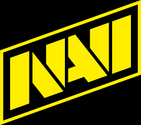
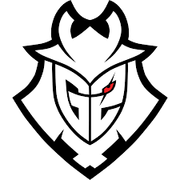
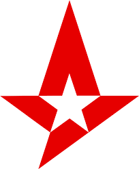

Díky vysoké oblibě této hry se v roce 2013 udělal turnaj v této hře. Od té doby se koná každý rok šampionát.
Existuje mnoho týmů které se účastní tohoto šampionátu
Nějaké týmy:NAVI(Natus Vincere), G2, Australis, Faze clan, Ninjas in Pyjamas
  